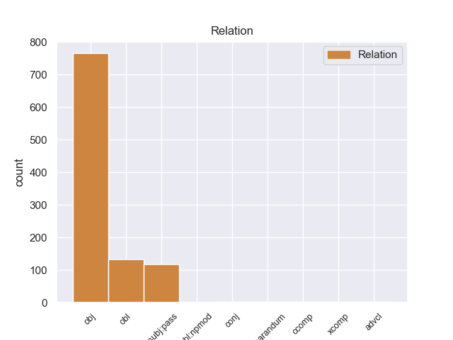
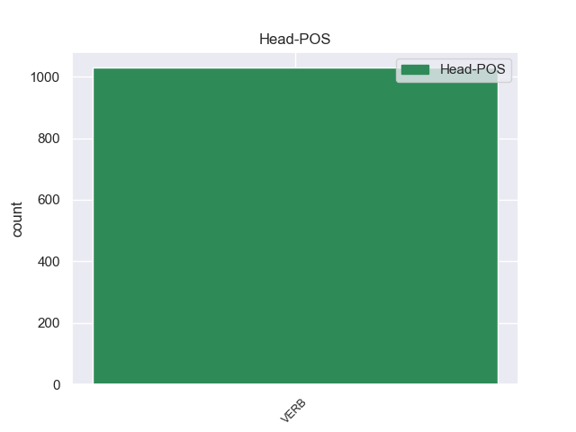
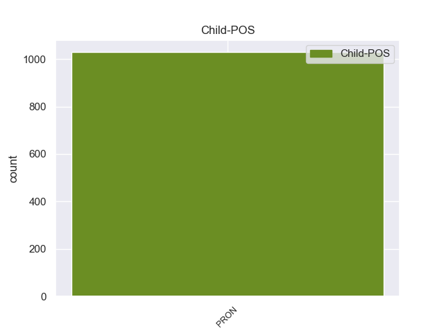

Distribution of features within this leaf



Morphosyntax Rules sorted by frequency.
- When the dependent token is the object(obj) of the head token, and the head token is VERB the Gender needs to be Neut.
1 Supposedly _ _ _ _ 0 _ _ _
2 they _ _ _ _ 0 _ _ _
3 will _ _ _ _ 0 _ _ _
4 be _ _ _ _ 0 _ _ _
5 holding hold VERB VBG Tense=Pres|VerbForm=Part 0 _ _ _
6 it it PRON PRP Case=Acc|Gender=Neut|Number=Sing|Person=3|PronType=Prs 5 obj 5:obj _
7 for _ _ _ _ 0 _ _ _
8 me _ _ _ _ 0 _ _ _
9 this _ _ _ _ 0 _ _ _
10 evening _ _ _ _ 0 _ _ _
11 , _ _ _ _ 0 _ _ _
12 but _ _ _ _ 0 _ _ _
13 I _ _ _ _ 0 _ _ _
14 'm _ _ _ _ 0 _ _ _
15 sure _ _ _ _ 0 _ _ _
16 that _ _ _ _ 0 _ _ _
17 will _ _ _ _ 0 _ _ _
18 also _ _ _ _ 0 _ _ _
19 be _ _ _ _ 0 _ _ _
20 a _ _ _ _ 0 _ _ _
21 huge _ _ _ _ 0 _ _ _
22 ordeal _ _ _ _ 0 _ _ _
23 . _ _ _ _ 0 _ _ _
1 Of _ _ _ _ 0 _ _ _
2 course _ _ _ _ 0 _ _ _
3 , _ _ _ _ 0 _ _ _
4 they _ _ _ _ 0 _ _ _
5 could _ _ _ _ 0 _ _ _
6 n't _ _ _ _ 0 _ _ _
7 call _ _ _ _ 0 _ _ _
8 him _ _ _ _ 0 _ _ _
9 either _ _ _ _ 0 _ _ _
10 to _ _ _ _ 0 _ _ _
11 ask ask VERB VB VerbForm=Inf 0 _ _ _
12 about _ _ _ _ 0 _ _ _
13 it it PRON PRP Case=Acc|Gender=Neut|Number=Sing|Person=3|PronType=Prs 11 obl 11:obl:about _
14 because _ _ _ _ 0 _ _ _
15 apparently _ _ _ _ 0 _ _ _
16 they _ _ _ _ 0 _ _ _
17 do _ _ _ _ 0 _ _ _
18 n't _ _ _ _ 0 _ _ _
19 keep _ _ _ _ 0 _ _ _
20 their _ _ _ _ 0 _ _ _
21 employees _ _ _ _ 0 _ _ _
22 ' _ _ _ _ 0 _ _ _
23 phone _ _ _ _ 0 _ _ _
24 numbers _ _ _ _ 0 _ _ _
25 ( _ _ _ _ 0 _ _ _
26 riiight _ _ _ _ 0 _ _ _
27 ) _ _ _ _ 0 _ _ _
28 , _ _ _ _ 0 _ _ _
29 so _ _ _ _ 0 _ _ _
30 I _ _ _ _ 0 _ _ _
31 would _ _ _ _ 0 _ _ _
32 have _ _ _ _ 0 _ _ _
33 to _ _ _ _ 0 _ _ _
34 return _ _ _ _ 0 _ _ _
35 on _ _ _ _ 0 _ _ _
36 Monday _ _ _ _ 0 _ _ _
37 ( _ _ _ _ 0 _ _ _
38 driving _ _ _ _ 0 _ _ _
39 for _ _ _ _ 0 _ _ _
40 3 _ _ _ _ 0 _ _ _
41 days _ _ _ _ 0 _ _ _
42 now _ _ _ _ 0 _ _ _
43 with _ _ _ _ 0 _ _ _
44 no _ _ _ _ 0 _ _ _
45 wheel _ _ _ _ 0 _ _ _
46 lock _ _ _ _ 0 _ _ _
47 should _ _ _ _ 0 _ _ _
48 I _ _ _ _ 0 _ _ _
49 get _ _ _ _ 0 _ _ _
50 a _ _ _ _ 0 _ _ _
51 flat _ _ _ _ 0 _ _ _
52 ) _ _ _ _ 0 _ _ _
53 . _ _ _ _ 0 _ _ _
1 They _ _ _ _ 0 _ _ _
2 promised _ _ _ _ 0 _ _ _
3 it it PRON PRP Case=Nom|Gender=Neut|Number=Sing|Person=3|PronType=Prs 6 nsubj:pass 6:nsubj:pass SpaceAfter=No
4 'd _ _ _ _ 0 _ _ _
5 be _ _ _ _ 0 _ _ _
6 done do VERB VBN Tense=Past|VerbForm=Part|Voice=Pass 0 _ _ _
7 within _ _ _ _ 0 _ _ _
8 an _ _ _ _ 0 _ _ _
9 hour _ _ _ _ 0 _ _ _
10 , _ _ _ _ 0 _ _ _
11 so _ _ _ _ 0 _ _ _
12 I _ _ _ _ 0 _ _ _
13 waited _ _ _ _ 0 _ _ _
14 in _ _ _ _ 0 _ _ _
15 the _ _ _ _ 0 _ _ _
16 lobby _ _ _ _ 0 _ _ _
17 . _ _ _ _ 0 _ _ _
1 I _ _ _ _ 0 _ _ _
2 know know VERB VBP Mood=Ind|Tense=Pres|VerbForm=Fin 0 _ _ _
3 New _ _ _ _ 0 _ _ _
4 York _ _ _ _ 0 _ _ _
5 pizza _ _ _ _ 0 _ _ _
6 and _ _ _ _ 0 _ _ _
7 this _ _ _ _ 0 _ _ _
8 is _ _ _ _ 0 _ _ _
9 not _ _ _ _ 0 _ _ _
10 it it PRON PRP Case=Nom|Gender=Neut|Number=Sing|Person=3|PronType=Prs 2 conj 2:conj:and SpaceAfter=No
11 !! _ _ _ _ 0 _ _ _
1 I _ _ _ _ 0 _ _ _
2 WAS _ _ _ _ 0 _ _ _
3 ALSO _ _ _ _ 0 _ _ _
4 THERE _ _ _ _ 0 _ _ _
5 OF _ _ _ _ 0 _ _ _
6 JULY _ _ _ _ 0 _ _ _
7 4TH _ _ _ _ 0 _ _ _
8 2008 _ _ _ _ 0 _ _ _
9 , _ _ _ _ 0 _ _ _
10 WHEN _ _ _ _ 0 _ _ _
11 MY _ _ _ _ 0 _ _ _
12 DAUGHTER _ _ _ _ 0 _ _ _
13 S _ _ _ _ 0 _ _ _
14 BUFFALO _ _ _ _ 0 _ _ _
15 WINGS _ _ _ _ 0 _ _ _
16 CAME come VERB VBD Mood=Ind|Tense=Past|VerbForm=Fin 0 _ _ _
17 OUT _ _ _ _ 0 _ _ _
18 WITH _ _ _ _ 0 _ _ _
19 A _ _ _ _ 0 _ _ _
20 FLY _ _ _ _ 0 _ _ _
21 ON _ _ _ _ 0 _ _ _
22 IT it PRON PRP Case=Nom|Gender=Neut|Number=Sing|Person=3|PronType=Prs 16 advcl 16:advcl:on SpaceAfter=No
23 . _ _ _ _ 0 _ _ _
1 it it PRON PRP Case=Nom|Gender=Neut|Number=Sing|Person=3|PronType=Prs 2 reparandum 2:reparandum SpaceAfter=No
2 's be VERB VBZ Mood=Ind|Number=Sing|Person=3|Tense=Pres|VerbForm=Fin 0 _ _ _
3 did _ _ _ _ 0 _ _ _
4 you _ _ _ _ 0 _ _ _
5 watch _ _ _ _ 0 _ _ _
6 your _ _ _ _ 0 _ _ _
7 girl _ _ _ _ 0 _ _ _
8 on _ _ _ _ 0 _ _ _
9 tv _ _ _ _ 0 _ _ _
10 last _ _ _ _ 0 _ _ _
11 night _ _ _ _ 0 _ _ _
12 ? _ _ _ _ 0 _ _ _
1 We _ _ _ _ 0 _ _ _
2 are _ _ _ _ 0 _ _ _
3 much _ _ _ _ 0 _ _ _
4 safer _ _ _ _ 0 _ _ _
5 today _ _ _ _ 0 _ _ _
6 on _ _ _ _ 0 _ _ _
7 board _ _ _ _ 0 _ _ _
8 ship _ _ _ _ 0 _ _ _
9 due _ _ _ _ 0 _ _ _
10 to _ _ _ _ 0 _ _ _
11 SOLAS _ _ _ _ 0 _ _ _
12 , _ _ _ _ 0 _ _ _
13 and _ _ _ _ 0 _ _ _
14 I _ _ _ _ 0 _ _ _
15 suppose suppose VERB VBP Mood=Ind|Tense=Pres|VerbForm=Fin 0 _ _ _
16 if _ _ _ _ 0 _ _ _
17 any _ _ _ _ 0 _ _ _
18 good _ _ _ _ 0 _ _ _
19 came _ _ _ _ 0 _ _ _
20 out _ _ _ _ 0 _ _ _
21 of _ _ _ _ 0 _ _ _
22 the _ _ _ _ 0 _ _ _
23 Titanic _ _ _ _ 0 _ _ _
24 tragedy _ _ _ _ 0 _ _ _
25 , _ _ _ _ 0 _ _ _
26 the _ _ _ _ 0 _ _ _
27 adoption _ _ _ _ 0 _ _ _
28 of _ _ _ _ 0 _ _ _
29 SOLAS _ _ _ _ 0 _ _ _
30 is _ _ _ _ 0 _ _ _
31 probably _ _ _ _ 0 _ _ _
32 it it PRON PRP Case=Nom|Gender=Neut|Number=Sing|Person=3|PronType=Prs 15 ccomp 15:ccomp SpaceAfter=No
33 . _ _ _ _ 0 _ _ _
non-conforming Examples:
1 Al _ _ _ _ 0 _ _ _
2 - _ _ _ _ 0 _ _ _
3 Zaman _ _ _ _ 0 _ _ _
4 : _ _ _ _ 0 _ _ _
5 Guerrillas _ _ _ _ 0 _ _ _
6 killed _ _ _ _ 0 _ _ _
7 a _ _ _ _ 0 _ _ _
8 member _ _ _ _ 0 _ _ _
9 of _ _ _ _ 0 _ _ _
10 the _ _ _ _ 0 _ _ _
11 Kurdistan _ _ _ _ 0 _ _ _
12 Democratic _ _ _ _ 0 _ _ _
13 Party _ _ _ _ 0 _ _ _
14 after _ _ _ _ 0 _ _ _
15 kidnapping kidnap VERB VBG VerbForm=Ger 0 _ _ _
16 him he PRON PRP Case=Acc|Gender=Masc|Number=Sing|Person=3|PronType=Prs 15 obj 15:obj _
17 in _ _ _ _ 0 _ _ _
18 Mosul _ _ _ _ 0 _ _ _
19 . _ _ _ _ 0 _ _ _
1 " _ _ _ _ 0 _ _ _
2 They _ _ _ _ 0 _ _ _
3 are _ _ _ _ 0 _ _ _
4 targetting _ _ _ _ 0 _ _ _
5 ambulances _ _ _ _ 0 _ _ _
6 " _ _ _ _ 0 _ _ _
7 , _ _ _ _ 0 _ _ _
8 " _ _ _ _ 0 _ _ _
9 American _ _ _ _ 0 _ _ _
10 snipers _ _ _ _ 0 _ _ _
11 are _ _ _ _ 0 _ _ _
12 shooting _ _ _ _ 0 _ _ _
13 children _ _ _ _ 0 _ _ _
14 and _ _ _ _ 0 _ _ _
15 pregnant _ _ _ _ 0 _ _ _
16 women _ _ _ _ 0 _ _ _
17 " _ _ _ _ 0 _ _ _
18 , _ _ _ _ 0 _ _ _
19 and _ _ _ _ 0 _ _ _
20 " _ _ _ _ 0 _ _ _
21 They _ _ _ _ 0 _ _ _
22 are _ _ _ _ 0 _ _ _
23 using _ _ _ _ 0 _ _ _
24 cluster _ _ _ _ 0 _ _ _
25 bombs _ _ _ _ 0 _ _ _
26 against _ _ _ _ 0 _ _ _
27 civilians _ _ _ _ 0 _ _ _
28 " _ _ _ _ 0 _ _ _
29 is _ _ _ _ 0 _ _ _
30 all _ _ _ _ 0 _ _ _
31 you _ _ _ _ 0 _ _ _
32 get _ _ _ _ 0 _ _ _
33 to _ _ _ _ 0 _ _ _
34 hear hear VERB VB VerbForm=Inf 0 _ _ _
35 from _ _ _ _ 0 _ _ _
36 him he PRON PRP Case=Acc|Gender=Masc|Number=Sing|Person=3|PronType=Prs 34 obl 34:obl:from SpaceAfter=No
37 . _ _ _ _ 0 _ _ _
1 Someone _ _ _ _ 0 _ _ _
2 who _ _ _ _ 0 _ _ _
3 called call VERB VBD Mood=Ind|Tense=Past|VerbForm=Fin 0 _ _ _
4 himself himself PRON PRP Case=Acc|Gender=Masc|Number=Sing|Person=3|PronType=Prs|Reflex=Yes 3 obj 3:obj|5:nsubj:xsubj _
5 Abu _ _ _ _ 0 _ _ _
6 Hafs _ _ _ _ 0 _ _ _
7 from _ _ _ _ 0 _ _ _
8 the _ _ _ _ 0 _ _ _
9 Ibn _ _ _ _ 0 _ _ _
10 Al _ _ _ _ 0 _ _ _
11 - _ _ _ _ 0 _ _ _
12 Khattab _ _ _ _ 0 _ _ _
13 Brigades _ _ _ _ 0 _ _ _
14 ( _ _ _ _ 0 _ _ _
15 another _ _ _ _ 0 _ _ _
16 new _ _ _ _ 0 _ _ _
17 group _ _ _ _ 0 _ _ _
18 ) _ _ _ _ 0 _ _ _
19 was _ _ _ _ 0 _ _ _
20 on _ _ _ _ 0 _ _ _
21 Al _ _ _ _ 0 _ _ _
22 - _ _ _ _ 0 _ _ _
23 Jazeera _ _ _ _ 0 _ _ _
24 describing _ _ _ _ 0 _ _ _
25 the _ _ _ _ 0 _ _ _
26 enormous _ _ _ _ 0 _ _ _
27 casualties _ _ _ _ 0 _ _ _
28 among _ _ _ _ 0 _ _ _
29 the _ _ _ _ 0 _ _ _
30 Marines _ _ _ _ 0 _ _ _
31 and _ _ _ _ 0 _ _ _
32 he _ _ _ _ 0 _ _ _
33 sweared _ _ _ _ 0 _ _ _
34 that _ _ _ _ 0 _ _ _
35 American _ _ _ _ 0 _ _ _
36 soldiers _ _ _ _ 0 _ _ _
37 were _ _ _ _ 0 _ _ _
38 mutilating _ _ _ _ 0 _ _ _
39 the _ _ _ _ 0 _ _ _
40 bodies _ _ _ _ 0 _ _ _
41 of _ _ _ _ 0 _ _ _
42 dead _ _ _ _ 0 _ _ _
43 insurgents _ _ _ _ 0 _ _ _
44 . _ _ _ _ 0 _ _ _
1 The _ _ _ _ 0 _ _ _
2 problem _ _ _ _ 0 _ _ _
3 with _ _ _ _ 0 _ _ _
4 this _ _ _ _ 0 _ _ _
5 argument _ _ _ _ 0 _ _ _
6 is _ _ _ _ 0 _ _ _
7 that _ _ _ _ 0 _ _ _
8 Bush _ _ _ _ 0 _ _ _
9 lacked _ _ _ _ 0 _ _ _
10 the _ _ _ _ 0 _ _ _
11 experience _ _ _ _ 0 _ _ _
12 necessary _ _ _ _ 0 _ _ _
13 to _ _ _ _ 0 _ _ _
14 be _ _ _ _ 0 _ _ _
15 president _ _ _ _ 0 _ _ _
16 when _ _ _ _ 0 _ _ _
17 he _ _ _ _ 0 _ _ _
18 ran _ _ _ _ 0 _ _ _
19 in _ _ _ _ 0 _ _ _
20 2000 _ _ _ _ 0 _ _ _
21 , _ _ _ _ 0 _ _ _
22 so _ _ _ _ 0 _ _ _
23 this _ _ _ _ 0 _ _ _
24 sort _ _ _ _ 0 _ _ _
25 of _ _ _ _ 0 _ _ _
26 cheap _ _ _ _ 0 _ _ _
27 shot _ _ _ _ 0 _ _ _
28 just _ _ _ _ 0 _ _ _
29 hoists hoist VERB VBZ Mood=Ind|Number=Sing|Person=3|Tense=Pres|VerbForm=Fin 0 _ _ _
30 him he PRON PRP Case=Acc|Gender=Masc|Number=Sing|Person=3|PronType=Prs 29 obj 29:obj _
31 by _ _ _ _ 0 _ _ _
32 his _ _ _ _ 0 _ _ _
33 own _ _ _ _ 0 _ _ _
34 petard _ _ _ _ 0 _ _ _
35 . _ _ _ _ 0 _ _ _
1 Bush _ _ _ _ 0 _ _ _
2 , _ _ _ _ 0 _ _ _
3 in _ _ _ _ 0 _ _ _
4 answering _ _ _ _ 0 _ _ _
5 the _ _ _ _ 0 _ _ _
6 question _ _ _ _ 0 _ _ _
7 about _ _ _ _ 0 _ _ _
8 the _ _ _ _ 0 _ _ _
9 leader _ _ _ _ 0 _ _ _
10 of _ _ _ _ 0 _ _ _
11 Pakistan _ _ _ _ 0 _ _ _
12 , _ _ _ _ 0 _ _ _
13 also _ _ _ _ 0 _ _ _
14 said _ _ _ _ 0 _ _ _
15 : _ _ _ _ 0 _ _ _
16 " _ _ _ _ 0 _ _ _
17 The _ _ _ _ 0 _ _ _
18 new _ _ _ _ 0 _ _ _
19 Pakistani _ _ _ _ 0 _ _ _
20 general _ _ _ _ 0 _ _ _
21 , _ _ _ _ 0 _ _ _
22 he he PRON PRP Case=Nom|Gender=Masc|Number=Sing|Person=3|PronType=Prs 26 nsubj:pass 26:nsubj:pass SpaceAfter=No
23 's _ _ _ _ 0 _ _ _
24 just _ _ _ _ 0 _ _ _
25 been _ _ _ _ 0 _ _ _
26 elected elect VERB VBN Tense=Past|VerbForm=Part|Voice=Pass 0 _ _ _
27 -- _ _ _ _ 0 _ _ _
28 not _ _ _ _ 0 _ _ _
29 elected _ _ _ _ 0 _ _ _
30 , _ _ _ _ 0 _ _ _
31 this _ _ _ _ 0 _ _ _
32 guy _ _ _ _ 0 _ _ _
33 took _ _ _ _ 0 _ _ _
34 over _ _ _ _ 0 _ _ _
35 office _ _ _ _ 0 _ _ _
36 . _ _ _ _ 0 _ _ _